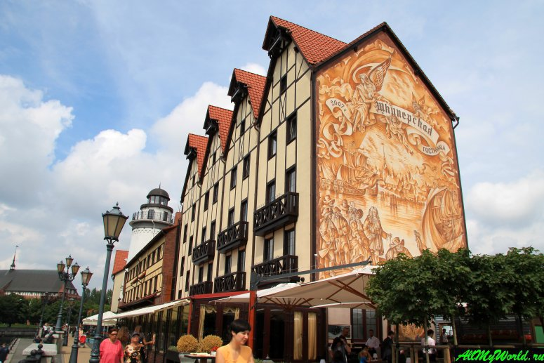
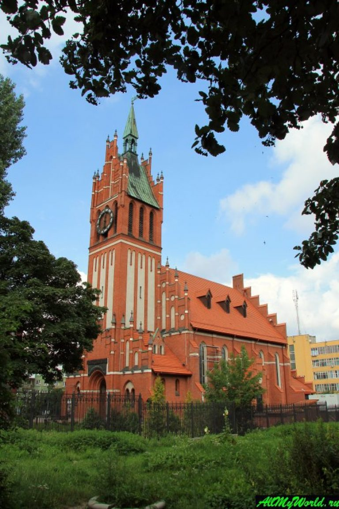
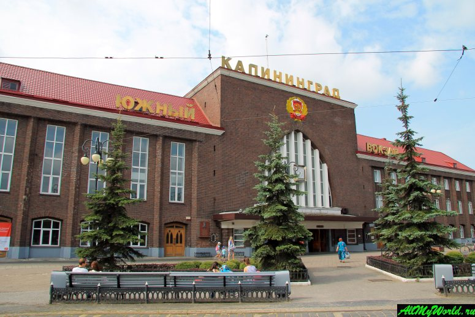
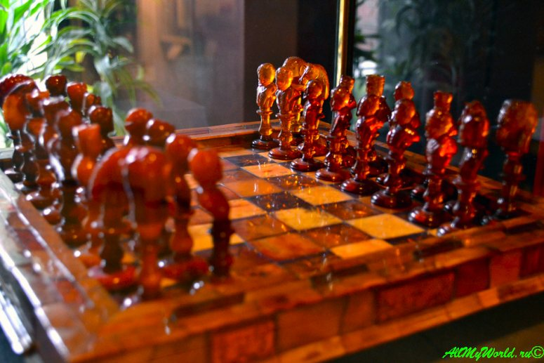
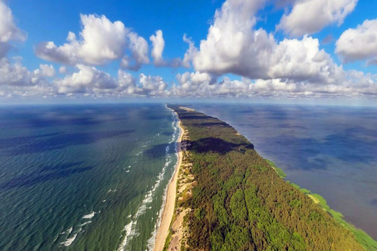

Путеводитель по Калининграду
Выполнила студентка 1 курса
гуманитарного факультета
Лаптева Анна Васильевна
Калининград - город на западе России и центр одноимённой области. Расположен на берегу Балтийского моря и отделён от остальной части страны территорией других государств. Калининград в прошлом назывался Кёнигсберг и являлся столицей Восточной Пруссии. Это один из самых необычных городов России, который причудливо смешивает европейское и советское прошлое.
Историческая справка https://baltika39.ru/page/1340237
Общие сведения о городе https://www.jartour.ru/info/kali_common_info.html
Калининградская область расположена на юго-восточном побережье Балтийского моря и является самым западным регионом Российской Федерации, полностью отделенным от остальной территории страны сухопутными границами иностранных государств и международными морскими водами. На севере и востоке она граничит с Литвой, на юге - с Польшей. На западе 140-километровое побережье омывается водами Балтийского моря, которое образует два залива: Куршский (1,6 тыс. кв.км) и Калининградский - российская часть Вислинского залива (0,5 тыс. кв.км). Заливы отделены от моря узкими полосками суши - Куршской косой (48 км принадлежит Калининградской области) и Балтийской косой - российская часть Вислинской косы (65 км). Площадь области вместе с заливами - 15,1 тыс. кв.км, суши - 13,3 тыс. кв. км. Калининград связан с открыиым морем судоходным каналом (помтроен в начале XX века). Максимальная протяженность области с востока на запад составляет 195 км, с севера на юг - 110 км.
Карта города https://www.jartour.ru/info/kali_common_info.html
Путеводитель по Калининграду https://sam-turizm.ru/kaliningrad.html
Фотогалерея https://msustinov.livejournal.com/89693.html
Гимн, герб, флаг Калининграда https://gimnrussia.ru/regions/kaliningradskaya-oblast/
|
Фотография |
Характеристика места |
|
 |
Рыбная деревня Калининграда – стилизованный под «старую Пруссию» этнографический и торговый комплекс, расположенный на правом берегу реки Преголя, между Медовым и Юбилейным мостами. Строить ее начали в 2006 году по инициативе тогдашнего губернатора Калининградской области Павла Федорова, желавшего, видимо, таким образом хоть немного устранить явный дефицит исторических и приятных глазу зданий в подведомственном ему городе. |
|
 |
Некогда кирха Святого Семейства, а ныне – Концертный зал Калининградской областной филармонии, неоготическое здание бывшей католической церкви Кёнигсберга является одной из самых ярких достопримечательностей Калининграда. Будучи построена в 1907 году в тогдашнем районе столицы Восточной Пруссии по имени Оберхаберберг, в конце Второй мировой войны она, как и весь город, серьезно пострадала и лишь в 1980 году подверглась серьезной реставрации. |
|
 |
Помимо своей несомненной архитектурной ценности, есть у этого здания и ценность военно-историческая: именно на него упали первые советские бомбы в Великой отечественной войне. 22 июня, когда самолеты люфтваффе уже вовсю бомбили Киев, советские ВВС получили приказ нанести ответный удар. И три звена средних бомбардировщиков, взлетев в Вентспилсе, сбросили свои «приветы» на ж/д вокзал Кёнигсберга, коксогазовый завод и на несколько военных объектов в Тильзите (ныне город Советск). |
|
 |
Музей янтаря является одной из самых интересных достопримечательностей Калининграда, к тому же он располагается в одном из немногих уцелевших исторических зданий города – «Башне Дона», прусском оборонительном сооружении середины XIX века. Экспозиция посвящена янтарю и всем возможным областям его применения – некоторые из экспонатов музея являются признанными шедеврами мирового значения. |
|
 |
Это природное чудо с полным правом можно считать главной достопримечательностью Калининградской области. Куршская коса представляет собой узкую полосу суши, тянущуюся от литовской Клайпеды до российского Зеленоградска (бывшего прусского Кранца). Длина косы составляет порядка 100 км, ширина колеблется от 400 до 3800 метров. Куршская коса является уникальной и очень хрупкой экосистемой, ради сохранения которой почти вся территория косы объявлена заповедником. |
Официальный сайт Калининграда https://www.klgd.ru/